Monday, Sep 9
You can also download a PDF copy of this lecture.
Simulation Study of Optimum Allocation
Strata have same variance, but different sizes.
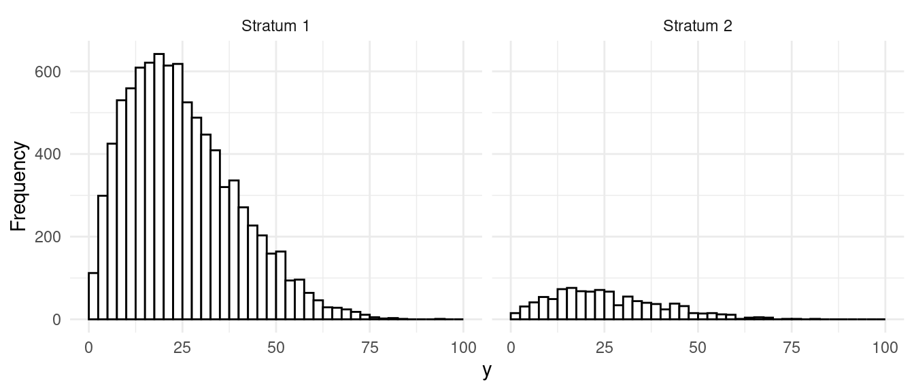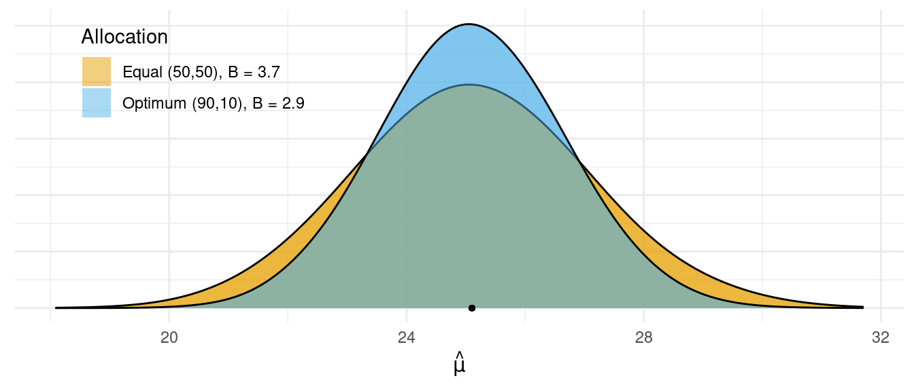 Strata have different variance, but same sizes. 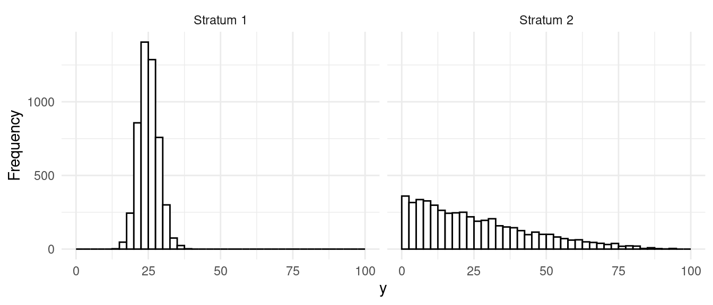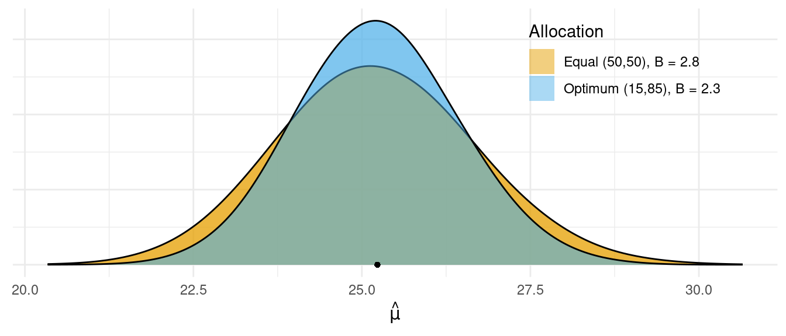
Strata have different variances and sizes. 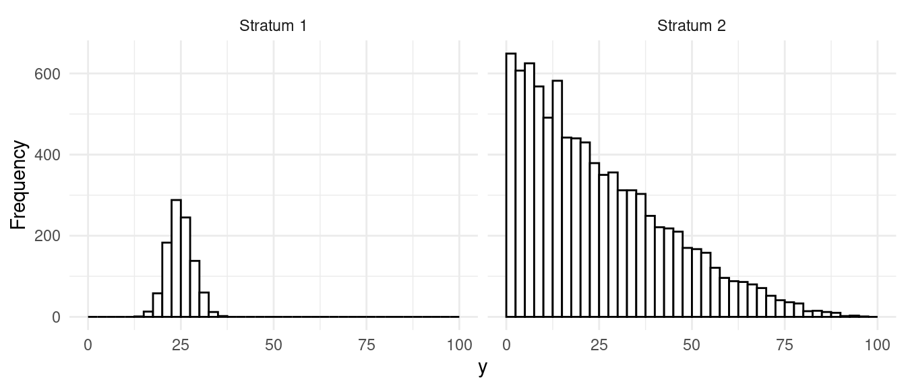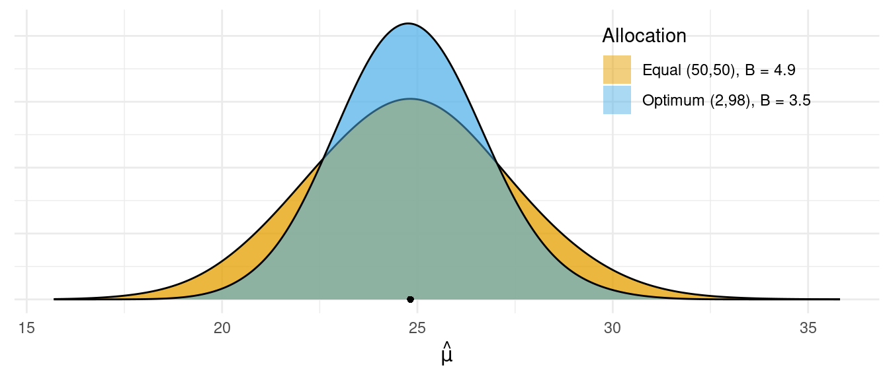
Comparison of Stratified and Simple Random Sampling
How does stratified random sampling compare with simple random sampling with respect to the variance of the estimators?
Analytical Results
Let \(V_{\tiny\mbox{Opt}}\) and \(V_{\tiny\mbox{Prop}}\) represent the variance of the estimator \(\hat\tau\) or \(\hat\mu\) from a stratified random sampling design with optimum and proportional allocation, respectively. And let \(V_{\tiny\mbox{SRS}}\) represent the variance of the estimator for a simple random sampling design. It can be shown that generally \[ V_{\tiny\mbox{SRS}} \ge V_{\tiny\mbox{Prop}} \ge V_{\tiny\mbox{Opt}}. \] But how different are these variances?
- The difference between proportional and optimum allocation stratified random sampling designs is \[ V_{\tiny\mbox{Prop}} - V_{\tiny\mbox{Opt}} = \frac{1}{n}\sum_{j=1}^L\frac{N_j}{N}(\sigma_j - \bar{\sigma})^2, \ \ \ \text{where} \ \ \ \bar{\sigma} = \sum_{j=1}^L \frac{N_j}{N}\sigma_j. \] So when is optimum allocation substantially better than proportional allocation in stratified random sampling?
- The difference between simple random sampling and proportional allocation stratified random sampling is \[ V_{\tiny\mbox{SRS}} - V_{\tiny\mbox{Prop}} \approx \frac{1}{n}\left(1 - \frac{n}{N}\right)\sum_{j=1}^L\frac{N_j}{N}(\mu_j - \mu)^2. \] So when is proportionally-allocated stratified random sampling substantially better than simple random sampling?
- The difference between simple random sampling and optimum-allocated stratified random sampling is \[ V_{\tiny\mbox{SRS}} - V_{\tiny\mbox{Opt}} \approx \frac{1}{n}\sum_{j=1}^L\frac{N_j}{N}(\sigma_j - \bar{\sigma})^2 + \frac{1}{n}\left(1 - \frac{n}{N}\right)\sum_{j=1}^L\frac{N_j}{N}(\mu_j - \mu)^2. \] So when is optimum-allocated stratified random sampling substantially better than simple random sampling?
Simulation Results
Strata have same means, different variance. 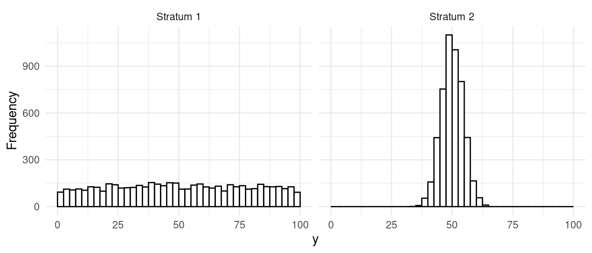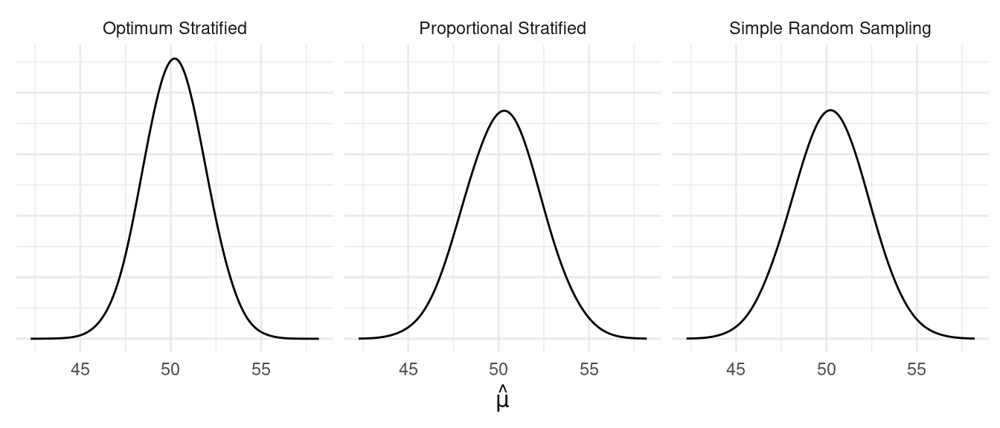
| design | V | SE | B |
|---|---|---|---|
| Optimum Stratified | 2.61 | 1.62 | 3.24 |
| Proportional Stratified | 3.90 | 1.97 | 3.94 |
| Simple Random Sampling | 3.91 | 1.98 | 3.96 |
Strata have different means, same variance. 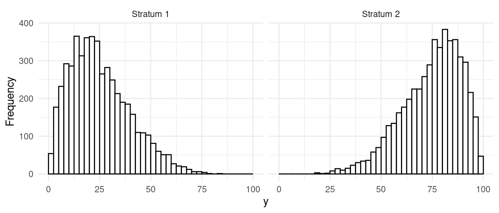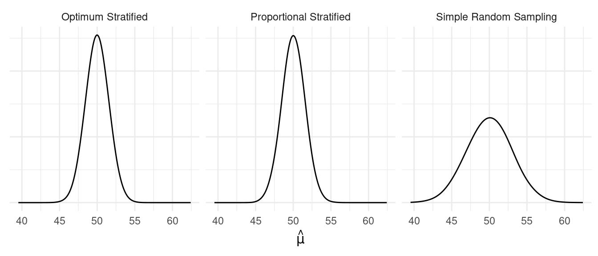
| design | V | SE | B |
|---|---|---|---|
| Optimum Stratified | 2.09 | 1.45 | 2.90 |
| Proportional Stratified | 2.11 | 1.45 | 2.90 |
| Simple Random Sampling | 8.05 | 2.84 | 5.68 |
Strata have different means, different variance. 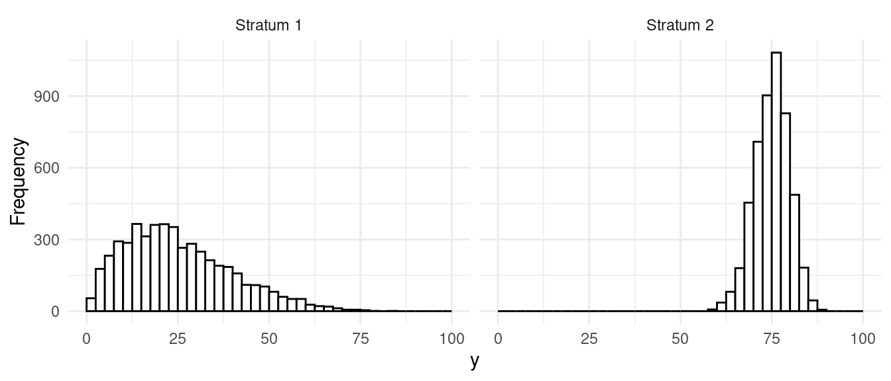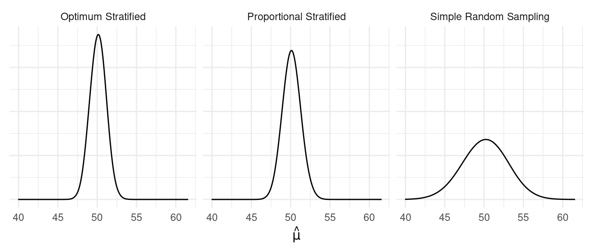
| design | V | SE | B |
|---|---|---|---|
| Optimum Stratified | 0.93 | 0.96 | 1.92 |
| Proportional Stratified | 1.18 | 1.09 | 2.18 |
| Simple Random Sampling | 7.18 | 2.68 | 5.36 |
Design Effect
The design effect of a complex sampling design is defined as \[ D = \frac{V_{\small\text{C}}}{V_{\small\text{SRS}}} \] where \(V_{\small C}\) and \(V_{\small\text{SRS}}\) are the variances of the estimators for a paramater under a complex sampling design (e.g., stratified random sampling) and simple random sampling, respectively. Clearly \[\begin{align*} D < 1 & \Leftrightarrow V_{\small\text{C}} < V_{\small\text{SRS}} \ \ (\text{i.e., complex is better}),\\ D = 1 & \Leftrightarrow V_{\small\text{C}} = V_{\small\text{SRS}} \ \ (\text{i.e., same}),\\ D > 1 & \Leftrightarrow V_{\small\text{C}} > V_{\small\text{SRS}} \ \ (\text{i.e., SRS is better}). \end{align*}\] The design effect can be computed a couple of ways.
- Hypothetical analysis (using equations or simulation).
- Estimated from a sample drawn using the complex sampling design.

| design | V | SE | B |
|---|---|---|---|
| Optimum Stratified | 0.93 | 0.96 | 1.92 |
| Proportional Stratified | 1.18 | 1.09 | 2.18 |
| Simple Random Sampling | 7.18 | 2.68 | 5.36 |
From this simulation we have that \(V_{\tiny\mbox{Opt}} \approx 0.93\), \(V_{\tiny\mbox{Prop}} \approx 1.18\), and \(V_{\tiny\mbox{SRS}} \approx 7.18\). What are the design effects of the two stratified random sampling designs?
Effective Sample Size
The effective sample size of a complex sampling design is defined as \[ \text{ESS} = \frac{n}{D}, \] and is interpreted as the sample size that a simple random sampling design would need for an estimator to have the same variance as that based on a complex sampling design.
Example: The sample size used in the simulation above is \(n\) = 100. What is the effective sample size of the two stratified random sampling designs?